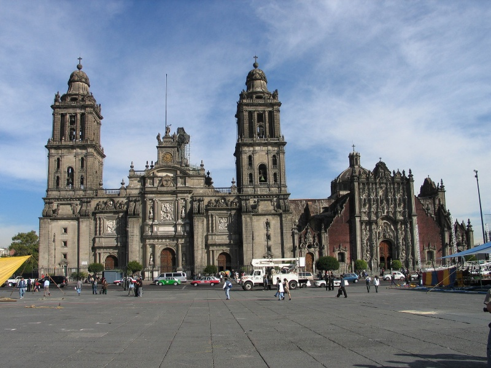
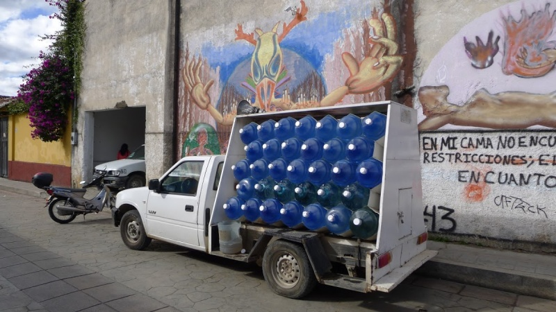
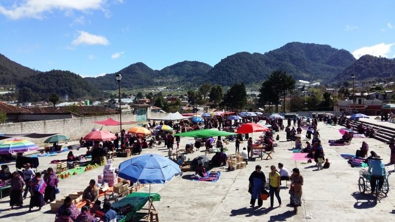
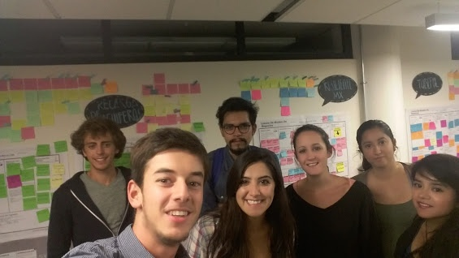
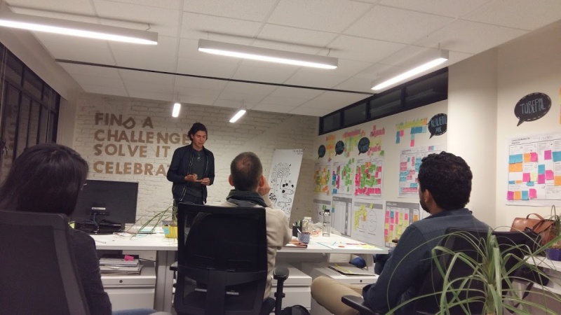
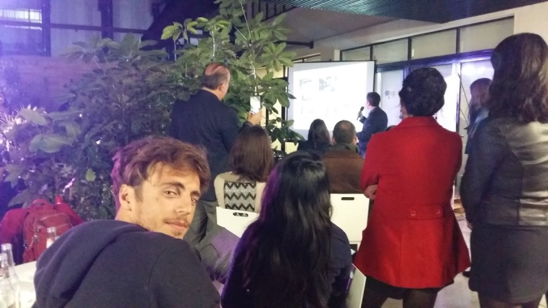

4/7 - Mexique : eau et santé dans les pays en développement
Bonjour à tous !
En ce début d'année et après nos trois premiers articles d'étude de l'eau douce à travers le continent nord-américain, il est venu le temps pour nous de publier notre quatrième article traitant des problèmes de distribution de l'eau au Mexique, où la ressource représente un enjeu majeur du développement.
Nos premiers aperçus du problème nous parviennent avant même notre traversée de la frontière : rappelez vous, en Arizona, Chloé Fandel nous parlait de l'importance du drainage du fleuve Colorado pour l'approvisionnement des grandes villes du Sud-Ouest américain. Celle-ci expliquait qu'en conséquence, à son arrivée au Mexique, le débit du fleuve était réduit à 10% de de son débit au niveau du lac Powell... Or, l'aridité du Mexique du Nord égale en sévérité celle de l'Arizona. Mais le poids économique et politique du voisin américain réduit l'efficacité des autorités mexicaines lors des négociations sur la distribution des eaux du fleuve... "Pauvre Mexique, né si loin de dieu et si près des Etats-Unis" dit bien un dicton local !
De plus, c'est dans la bouche de Dennis, le ranchman pour lequel nous avions travaillé, que nous avions entendu pour la première fois une expression plutôt intéressante. Dennis surnommait l'eau du robinet mexicaine "la revanche de Montezuma", du nom de l'empereur aztèque qui vit venir face à lui les conquêtes espagnoles du XVIème siècle. Pourquoi ? Tout simplement parce qu'en buvant l'eau locale, les descendants des gringos adversaires de ce peuple s'exposent à d'éventuelles complications médicales... Et oui la principale mise en garde pour le voyageur qui découvre le Mexique ne concerne pas les cartels ou les narcos, mais bien le danger de consommer directement l'eau du robinet ! Ce qui nous amène au problème fondamental des grandes villes du pays.
Hygiène et distribution
Mexico City est une ville en altitude (plus de 2000 mètres) construite par les espagnols il y a 500 ans sur les ruines de la cité de Tenochtitlan bâtie par les mayas sur... un lac ! A la différence du nord du pays, elle dispose donc de réserves souterraines qui alimentent en partie sa population. Mais ces réserves s'épuisent et aujourd'hui une grande partie de l'eau de Mexico est acheminée depuis les bassins des vallées environnantes via des canaux mesurant plusieurs centaines de kilomètres de long ! Le temps d'arriver jusqu'à la ville l'eau est contaminée, de mauvaise qualité, et une grande partie s'est évaporée au soleil ou perdue dans des fuites... D'ailleurs l'épuisement des réserves aquifères souterraines entraîne chaque année un enfoncement de 40 centimètres de la ville dans le sol ! Si vous vous rendez dans le centre de Mexico vous pourrez ainsi observer un certain nombre de bâtiments penchés. Il faut cependant préciser que seuls les habitants des quartiers centraux disposent d'un réseau de distribution. Les personnes vivant dans les périphéries plus pauvres de la ville n'ont parfois accès à la ressource qu'une ou deux fois par semaine.

La cathédrale de Mexico (à droite) penche légèrement vers la droite
Nous constatons immédiatement avec Grégoire qu'à Mexico, pas seulement les gringos, mais presque aucun habitant des quartiers centraux ne se risque à boire l'eau du robinet, pourtant délivrée de manière continue. On lui préfère l'eau des garafones, bidons d'eau potable distribués par camions aux habitations, entreprises, petits commerces qui ne disposent pas de filtres dans leurs installations. Car l'eau brute qui leur est fournie n'est pas saine : virus et bactéries fourmillent dans les canalisations mexicaines et présentent de nombreux risques médicaux pour ceux qui les boivent.

Un camion transportant des garafones d'eau potable
Problème majeur : les régions les plus pauvres du pays ne peuvent pas toujours accéder à l'eau assainie. Pour des raisons de coût, mais aussi pour des raisons logistiques, certains fermiers du Chiapas ou du Guerrero (Etats du Mexique) ne peuvent accéder régulièrement aux livraisons de garafones, et se content donc des moyens du bord, risquant souvent leur bonne santé.
Comment subvenir à leurs besoins en eau saine ?

Zinacantan, un village de la région du Chiapas, région la plus pauvre du Mexique
Rencontres avec Makesense
Dès notre arrivée, nous sommes accueillis chaleureusement par MakeSense Mexico, un réseau d'entrepreneurs sociaux et de gens intéressés par leurs actions et voulant participer directement ou indirectement à leurs actions. Makesense Mexico se concentre sur les problématiques de l'eau douce dans la ville de Mexico. Chaque année, ils sélectionnent six projets, les parrainent et les accompagnent pendant toute une année pour les aider à se développer. Dans ce contexte, nous rencontrons quelques uns des projets en compétition pour ce parrainage.

Rencontre avec les équipes de MakeSense à Mexico
Nous rencontrons entre autres Fernando qui développe le projet Somos Agua qui vise à distribuer aux familles pauvres et rurales du Sud du Mexique un filtre longue durée. Il nous expose un constat accablant : les maladies issues d'une consommation d'eau malsaine constituent la deuxième cause de mortalité infantile au Mexique. Chez ces familles, les conséquences sont si graves que certains projets de recensement des populations évitent volontairement de compter les enfants de moins de cinq ans, dont la survie est moins certaine que dans les grandes villes. Gastrites, infections mais aussi dans les cas les plus graves choléra frappent encore aujourd'hui régulièrement les populations les plus pauvres du Mexique. L'accès à l'eau douce est donc un enjeu majeur de l'amélioration de leurs conditions de vie.
Fernando et son équipe ont conçu un filtre très simple d'utilisation pour permettre aux populations pauvres du Sud du pays de filtrer l'eau des puits et des rivières. Le filtre tient plusieurs années car son autonomie peut être de 10 000 litres d'eau... Pour une famille de cinq personnes buvant deux litres d'eau par jour, on porte la date de remplacement à trois ans. Fernando a déjà distribué 6 000 de ces outils efficaces et sans complexité pour leurs utilisateurs. Il est aujourd'hui parrainé par MakeSense qui l'aide à trouver des financements pour que son outil bénéficie à plus de personnes.

Fernando nous présente son projet
Une autre rencontre qui nous a marquée est celle de l'équipe de Gotas de Esperanza. Ces derniers ont conçu une machine capable de produire de l'eau potable à partir simplement de l'air et de l'humidité ambiante ! Les derniers prototypes permettaient de produire jusqu'à 5,000L d'eau par jour, même dans des zones arides. De quoi régler à la fois les problèmes d'accès et de qualité de l'eau douce de certains villages isolés !
Nous rencontrons de nombreux autres projets et entrepreneurs lors des événements auxquels nous participons. Il est souvent question de filtres, de modes d'assainissements de l'eau et de développement d'outils pour conserver l'eau qui se raréfie pendant la période sèche. Toujours, les entrepreneurs sont motivés par leur idée et l'environnement qui leur est fourni par MakeSense leur apporte conseil et support pour tenter de mener à bien leurs projets. Le foisonnement d'initiatives et de projets dont nous avons été témoin était en tout cas très beau à voir. Souhaitons bonne chance à tous ces entrepreneurs !

Rencontre avec d'autres jeunes intéressés par l'entrepreneuriat social lors des événements MakeSense
Nous concluons notre collaboration avec MakeSense par l'interview de Fernanda qui dirige le programme de parrainage baptisé Agua Urbana. Elle nous parle à son tour du poids fondamental de l'accès à une eau saine et potable pour les populations pauvres, qui subissent bien plus gravement que les autres les conséquences d'une consommation d'eau sale. Elle nous parle également du problème de sécheresse du Mexique, qui connait une hydrographie capricieuse. En effet, dans un contexte où les eaux souterraines de Mexico s'épuisent d'années en années, il est important d'appréhender de nouvelles façons d'accumuler des réserves d'eau. Les pluies sont rares à Mexico mais, parfois, celles-ci font rages et innondent des quartiers de la ville. Fernanda travaille donc avec un projet cherchant à optimiser la collecte de ces eaux abondantes via la construction de puits. Quelle n'est pas notre surprise alors d'entendre un projet se rapprochant de celui de Chloé, qui travaillait sur les gabions en Arizona ! Nous vous laissons profiter pleinement du résumé de l'interview.
Sous-titres disponibles
En attendant, Grégoire et moi nous préparons pour notre prochaine étape, la Colombie...
A très vite !
Antoine